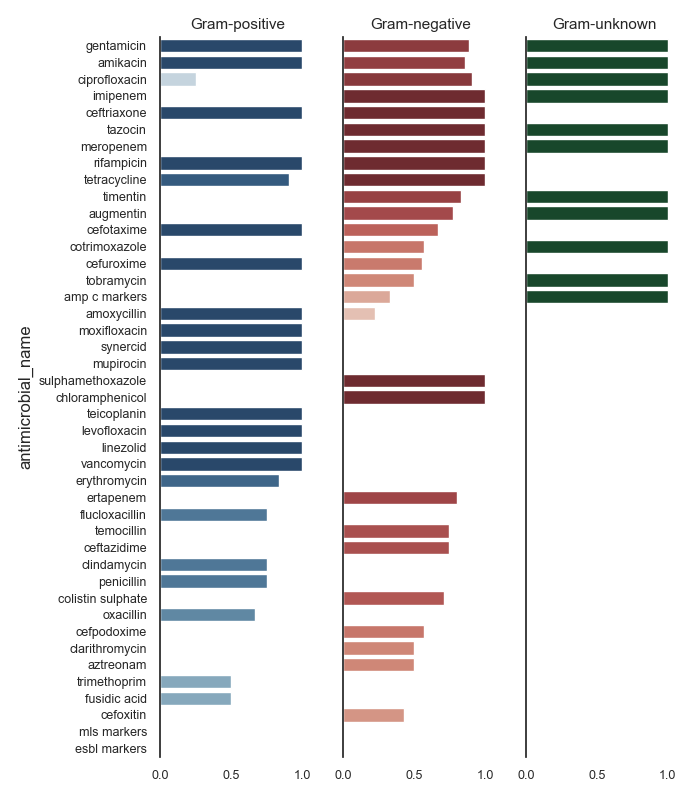
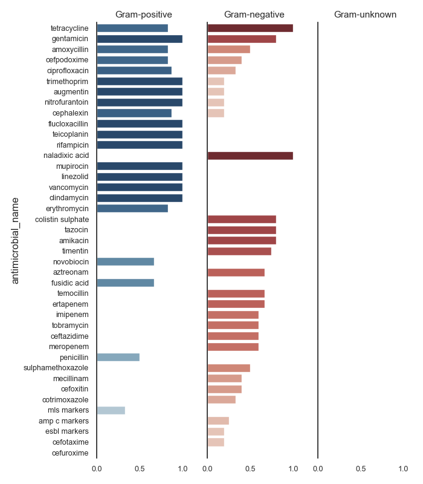
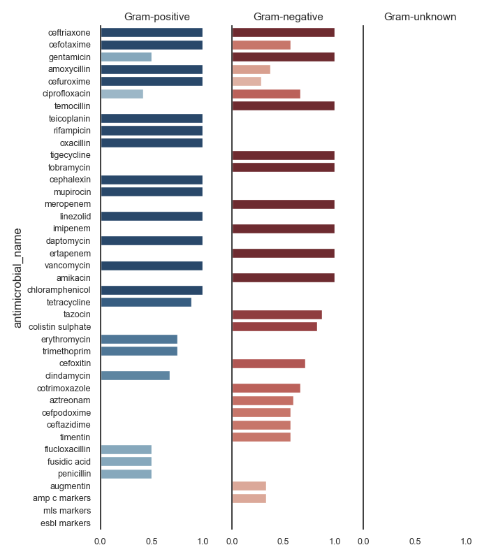
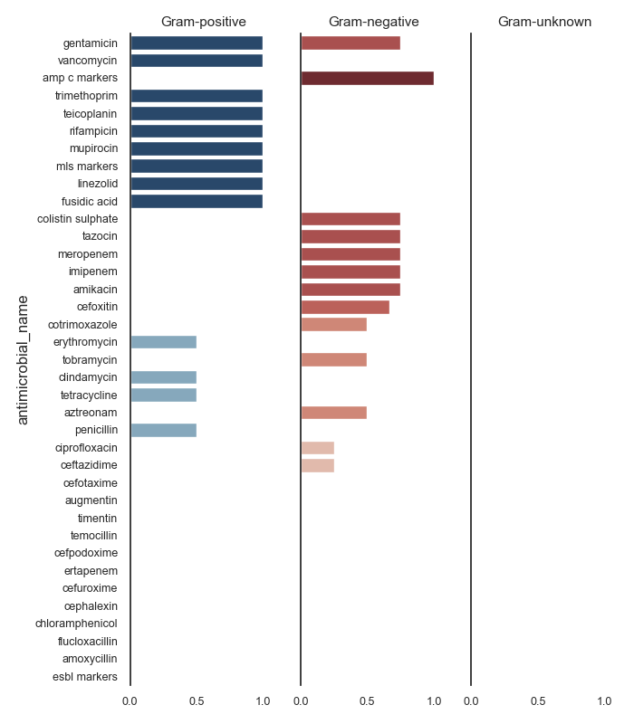

Note
Click here to download the full example code
ASAI - Multiple (by specimen)¶
- 
- 
- 
- 
Out:
Data:
date_received date_outcome patient_id laboratory_number specimen_code specimen_name ... antimicrobial_code antimicrobial_name sensitivity_method sensitivity mic reported
0 2009-01-03 NaN 20091 X428501 BLDCUL NaN ... AAMI amikacin NaN sensitive NaN NaN
1 2009-01-03 NaN 20091 X428501 BLDCUL NaN ... AAMO amoxycillin NaN resistant NaN NaN
2 2009-01-03 NaN 20091 X428501 BLDCUL NaN ... AAUG augmentin NaN sensitive NaN NaN
3 2009-01-03 NaN 20091 X428501 BLDCUL NaN ... AAZT aztreonam NaN sensitive NaN NaN
4 2009-01-03 NaN 20091 X428501 BLDCUL NaN ... ACAZ ceftazidime NaN sensitive NaN NaN
... ... ... ... ... ... ... ... ... ... ... ... .. ...
319117 2009-12-31 NaN 24645 H2012337 BLDCUL NaN ... AAMO amoxycillin NaN sensitive NaN NaN
319118 2009-12-31 NaN 24645 H2012337 BLDCUL NaN ... ALIN linezolid NaN sensitive NaN NaN
319119 2009-12-31 NaN 24645 H2012337 BLDCUL NaN ... ASYN synercid NaN resistant NaN NaN
319120 2009-12-31 NaN 24645 H2012337 BLDCUL NaN ... ATEI teicoplanin NaN sensitive NaN NaN
319121 2009-12-31 NaN 24645 H2012337 BLDCUL NaN ... AVAN vancomycin NaN sensitive NaN NaN
[319122 rows x 15 columns]
Columns:
Index(['date_received', 'date_outcome', 'patient_id', 'laboratory_number', 'specimen_code', 'specimen_name', 'specimen_description', 'microorganism_code', 'microorganism_name', 'antimicrobial_code', 'antimicrobial_name', 'sensitivity_method', 'sensitivity', 'mic', 'reported'], dtype='object')
SARI (overall):
sensitivity intermediate resistant sensitive freq sari
specimen_code microorganism_name antimicrobial_name
BFLCUL anaerobes metronidazole 0.0 0.0 1.0 1.0 0.0000
bacillus ciprofloxacin 0.0 0.0 1.0 1.0 0.0000
clindamycin 0.0 3.0 1.0 4.0 0.7500
erythromycin 0.0 1.0 3.0 4.0 0.2500
fusidic acid 0.0 3.0 1.0 4.0 0.7500
... ... ... ... ... ...
XINCUL streptococcus beta-haemolytic group b cephalexin 0.0 1.0 0.0 1.0 1.0000
clindamycin 0.0 1.0 8.0 9.0 0.1111
erythromycin 0.0 1.0 8.0 9.0 0.1111
penicillin 0.0 0.0 9.0 9.0 0.0000
tetracycline 0.0 8.0 1.0 9.0 0.8889
[4491 rows x 5 columns]
c:\users\kelda\desktop\repositories\github\pyamr\main\pyamr\core\asai.py:527: UserWarning:
Extreme resistances were found in the DataFrame. These rows
should be reviewed since these resistances might correspond
to pairs with low number of records.
c:\users\kelda\desktop\repositories\github\pyamr\main\pyamr\core\asai.py:538: UserWarning:
There are NULL values in columns that are required. These
rows will be ignored to safely compute ASAI. Please review
the DataFrame and address this inconsistencies. See below
for more information:
specimen_code 0
antimicrobial_name 0
gram_stain 0
GENUS 0
SPECIE 2414
RESISTANCE 0
ASAI (overall):
N_GENUS N_SPECIE ASAI_SCORE width gmean
gram_stain n p u n p u n p u
specimen_code antimicrobial_name
BFLCUL amoxycillin 1.0 NaN NaN 1.0 NaN NaN 1.0 NaN NaN 1.0 1.0000
cefixime 1.0 NaN NaN 1.0 NaN NaN 1.0 NaN NaN 1.0 1.0000
cefotaxime 1.0 1.0 NaN 1.0 1.0 NaN 1.0 1.0 NaN 2.0 1.0000
ceftriaxone 1.0 NaN NaN 1.0 NaN NaN 1.0 NaN NaN 1.0 1.0000
chloramphenicol 1.0 1.0 NaN 1.0 1.0 NaN 1.0 1.0 NaN 2.0 1.0000
... ... ... .. ... ... .. ... ... .. ... ...
XINCUL tetracycline NaN 2.0 NaN NaN 2.0 NaN NaN 0.5 NaN 0.5 0.7071
timentin 4.0 NaN NaN 4.0 NaN NaN 0.0 NaN NaN 0.0 0.0000
tobramycin 4.0 NaN NaN 4.0 NaN NaN 0.5 NaN NaN 0.5 0.7071
trimethoprim NaN 1.0 NaN NaN 1.0 NaN NaN 1.0 NaN 1.0 1.0000
vancomycin NaN 1.0 NaN NaN 1.0 NaN NaN 1.0 NaN 1.0 1.0000
[600 rows x 11 columns]
Cultures:
specimen_code
URICUL 116627.0
WOUCUL 94918.0
XINCUL 21427.0
SPTCUL 21113.0
BLDCUL 20333.0
ENTCUL 13110.0
T&FCUL 8150.0
MRSCUL 7865.0
VAGCUL 7425.0
EYECUL 2839.0
GUMCUL 1634.0
FAECUL 1317.0
URECUL 802.0
TISCUL 474.0
BFLCUL 450.0
SEMCUL 290.0
NEOCUL 213.0
PDFCUL 68.0
CSFCUL 32.0
RGNS 20.0
FUNSTC 14.0
TBCUL 1.0
Name: freq, dtype: float64
ASAI (BLDCUL)
specimen_code antimicrobial_name N_GENUS N_SPECIE ASAI_SCORE width gmean
gram_stain n p u n p u n p u
45 BLDCUL gentamicin 9.0 3.0 1.0 9.0 4.0 1.0 0.8889 1.0000 1.0 2.8889 0.9428
23 BLDCUL amikacin 7.0 1.0 1.0 7.0 1.0 1.0 0.8571 1.0000 1.0 2.8571 0.9258
35 BLDCUL ciprofloxacin 11.0 2.0 1.0 11.0 3.0 1.0 0.9091 0.2500 1.0 2.1591 0.4767
46 BLDCUL imipenem 8.0 NaN 1.0 8.0 NaN 1.0 1.0000 NaN 1.0 2.0000 1.0000
32 BLDCUL ceftriaxone 2.0 2.0 NaN 2.0 8.0 NaN 1.0000 1.0000 NaN 2.0000 1.0000
49 BLDCUL meropenem 8.0 NaN 1.0 8.0 NaN 1.0 1.0000 NaN 1.0 2.0000 1.0000
58 BLDCUL tazocin 8.0 NaN 1.0 8.0 NaN 1.0 1.0000 NaN 1.0 2.0000 1.0000
55 BLDCUL rifampicin 1.0 2.0 NaN 1.0 3.0 NaN 1.0000 1.0000 NaN 2.0000 1.0000
61 BLDCUL tetracycline 2.0 3.0 NaN 2.0 10.0 NaN 1.0000 0.9524 NaN 1.9524 0.9759
62 BLDCUL timentin 6.0 NaN 1.0 6.0 NaN 1.0 0.8333 NaN 1.0 1.8333 0.9129
26 BLDCUL augmentin 9.0 NaN 1.0 9.0 NaN 1.0 0.7778 NaN 1.0 1.7778 0.8819
28 BLDCUL cefotaxime 9.0 2.0 1.0 9.0 8.0 1.0 0.6667 1.0000 0.0 1.6667 0.0000
39 BLDCUL cotrimoxazole 7.0 NaN 1.0 7.0 NaN 1.0 0.5714 NaN 1.0 1.5714 0.7559
33 BLDCUL cefuroxime 9.0 1.0 1.0 9.0 2.0 1.0 0.5556 1.0000 0.0 1.5556 0.0000
63 BLDCUL tobramycin 6.0 NaN 1.0 6.0 NaN 1.0 0.5000 NaN 1.0 1.5000 0.7071
25 BLDCUL amp c markers 3.0 NaN 1.0 3.0 NaN 1.0 0.3333 NaN 1.0 1.3333 0.5774
24 BLDCUL amoxycillin 9.0 3.0 1.0 9.0 9.0 1.0 0.2222 1.0000 0.0 1.2222 0.0000
52 BLDCUL mupirocin NaN 1.0 NaN NaN 2.0 NaN NaN 1.0000 NaN 1.0000 1.0000
51 BLDCUL moxifloxacin NaN 1.0 NaN NaN 1.0 NaN NaN 1.0000 NaN 1.0000 1.0000
57 BLDCUL synercid NaN 1.0 NaN NaN 1.0 NaN NaN 1.0000 NaN 1.0000 1.0000
53 BLDCUL oxacillin NaN 1.0 NaN NaN 3.0 NaN NaN 1.0000 NaN 1.0000 1.0000
56 BLDCUL sulphamethoxazole 1.0 NaN NaN 1.0 NaN NaN 1.0000 NaN NaN 1.0000 1.0000
34 BLDCUL chloramphenicol 2.0 NaN NaN 2.0 NaN NaN 1.0000 NaN NaN 1.0000 1.0000
59 BLDCUL teicoplanin NaN 3.0 NaN NaN 10.0 NaN NaN 1.0000 NaN 1.0000 1.0000
47 BLDCUL levofloxacin NaN 1.0 NaN NaN 1.0 NaN NaN 1.0000 NaN 1.0000 1.0000
65 BLDCUL vancomycin NaN 4.0 NaN NaN 11.0 NaN NaN 1.0000 NaN 1.0000 1.0000
48 BLDCUL linezolid NaN 3.0 NaN NaN 5.0 NaN NaN 1.0000 NaN 1.0000 1.0000
41 BLDCUL erythromycin 1.0 4.0 NaN 1.0 11.0 NaN 0.0000 0.8750 NaN 0.8750 0.0000
40 BLDCUL ertapenem 5.0 NaN NaN 5.0 NaN NaN 0.8000 NaN NaN 0.8000 0.8944
43 BLDCUL flucloxacillin NaN 2.0 NaN NaN 3.0 NaN NaN 0.7500 NaN 0.7500 0.8660
60 BLDCUL temocillin 4.0 NaN NaN 4.0 NaN NaN 0.7500 NaN NaN 0.7500 0.8660
31 BLDCUL ceftazidime 8.0 NaN 1.0 8.0 NaN 1.0 0.7500 NaN 0.0 0.7500 0.0000
37 BLDCUL clindamycin NaN 2.0 NaN NaN 7.0 NaN NaN 0.7500 NaN 0.7500 0.8660
54 BLDCUL penicillin 1.0 4.0 NaN 1.0 11.0 NaN 0.0000 0.7500 NaN 0.7500 0.0000
38 BLDCUL colistin sulphate 7.0 NaN 1.0 7.0 NaN 1.0 0.7143 NaN 0.0 0.7143 0.0000
27 BLDCUL aztreonam 6.0 NaN NaN 6.0 NaN NaN 0.6667 NaN NaN 0.6667 0.8165
30 BLDCUL cefpodoxime 7.0 NaN 1.0 7.0 NaN 1.0 0.5714 NaN 0.0 0.5714 0.0000
36 BLDCUL clarithromycin 2.0 NaN NaN 2.0 NaN NaN 0.5000 NaN NaN 0.5000 0.7071
64 BLDCUL trimethoprim NaN 1.0 NaN NaN 2.0 NaN NaN 0.5000 NaN 0.5000 0.7071
44 BLDCUL fusidic acid NaN 1.0 NaN NaN 2.0 NaN NaN 0.5000 NaN 0.5000 0.7071
29 BLDCUL cefoxitin 7.0 NaN 1.0 7.0 NaN 1.0 0.4286 NaN 0.0 0.4286 0.0000
50 BLDCUL mls markers NaN 2.0 NaN NaN 4.0 NaN NaN 0.0000 NaN 0.0000 0.0000
42 BLDCUL esbl markers 2.0 NaN 1.0 2.0 NaN 1.0 0.0000 NaN 0.0 0.0000 0.0000
ASAI (SPTCUL)
specimen_code antimicrobial_name N_GENUS N_SPECIE ASAI_SCORE width gmean
gram_stain n p u n p u n p u
297 SPTCUL cefotaxime 8.0 1.0 NaN 8.0 1.0 NaN 0.7500 1.0000 NaN 1.7500 0.8660
302 SPTCUL cefuroxime 8.0 1.0 NaN 8.0 1.0 NaN 0.7500 1.0000 NaN 1.7500 0.8660
318 SPTCUL meropenem 7.0 1.0 NaN 7.0 1.0 NaN 0.7143 1.0000 NaN 1.7143 0.8452
314 SPTCUL gentamicin 7.0 2.0 NaN 7.0 3.0 NaN 0.7143 1.0000 NaN 1.7143 0.8452
328 SPTCUL tetracycline 2.0 3.0 NaN 2.0 7.0 NaN 1.0000 0.5000 NaN 1.5000 0.7071
292 SPTCUL amoxycillin 8.0 1.0 NaN 8.0 1.0 NaN 0.2500 1.0000 NaN 1.2500 0.5000
304 SPTCUL ciprofloxacin 9.0 3.0 NaN 9.0 4.0 NaN 0.6667 0.5000 NaN 1.1667 0.5774
322 SPTCUL oxacillin NaN 1.0 NaN NaN 1.0 NaN NaN 1.0000 NaN 1.0000 1.0000
321 SPTCUL mupirocin NaN 1.0 NaN NaN 1.0 NaN NaN 1.0000 NaN 1.0000 1.0000
320 SPTCUL moxifloxacin NaN 1.0 NaN NaN 1.0 NaN NaN 1.0000 NaN 1.0000 1.0000
310 SPTCUL erythromycin 2.0 3.0 NaN 2.0 7.0 NaN 0.5000 0.5000 NaN 1.0000 0.5000
301 SPTCUL ceftriaxone NaN 1.0 NaN NaN 1.0 NaN NaN 1.0000 NaN 1.0000 1.0000
303 SPTCUL chloramphenicol NaN 1.0 NaN NaN 1.0 NaN NaN 1.0000 NaN 1.0000 1.0000
317 SPTCUL linezolid NaN 3.0 NaN NaN 4.0 NaN NaN 1.0000 NaN 1.0000 1.0000
316 SPTCUL levofloxacin NaN 1.0 NaN NaN 1.0 NaN NaN 1.0000 NaN 1.0000 1.0000
326 SPTCUL teicoplanin NaN 2.0 NaN NaN 2.0 NaN NaN 1.0000 NaN 1.0000 1.0000
332 SPTCUL vancomycin NaN 3.0 NaN NaN 4.0 NaN NaN 1.0000 NaN 1.0000 1.0000
325 SPTCUL tazocin 7.0 NaN NaN 7.0 NaN NaN 0.8571 NaN NaN 0.8571 0.9258
291 SPTCUL amikacin 7.0 NaN NaN 7.0 NaN NaN 0.8571 NaN NaN 0.8571 0.9258
300 SPTCUL ceftazidime 7.0 NaN NaN 7.0 NaN NaN 0.8571 NaN NaN 0.8571 0.9258
306 SPTCUL clindamycin NaN 3.0 NaN NaN 5.0 NaN NaN 0.8333 NaN 0.8333 0.9129
324 SPTCUL rifampicin NaN 3.0 NaN NaN 4.0 NaN NaN 0.8333 NaN 0.8333 0.9129
331 SPTCUL trimethoprim NaN 2.0 NaN NaN 3.0 NaN NaN 0.7500 NaN 0.7500 0.8660
307 SPTCUL colistin sulphate 7.0 NaN NaN 7.0 NaN NaN 0.7143 NaN NaN 0.7143 0.8452
315 SPTCUL imipenem 7.0 NaN NaN 7.0 NaN NaN 0.7143 NaN NaN 0.7143 0.8452
298 SPTCUL cefoxitin 6.0 NaN NaN 6.0 NaN NaN 0.6667 NaN NaN 0.6667 0.8165
323 SPTCUL penicillin NaN 3.0 NaN NaN 7.0 NaN NaN 0.6667 NaN 0.6667 0.8165
308 SPTCUL cotrimoxazole 6.0 1.0 NaN 6.0 1.0 NaN 0.6667 0.0000 NaN 0.6667 0.0000
330 SPTCUL tobramycin 6.0 NaN NaN 6.0 NaN NaN 0.6667 NaN NaN 0.6667 0.8165
299 SPTCUL cefpodoxime 6.0 NaN NaN 6.0 NaN NaN 0.6667 NaN NaN 0.6667 0.8165
294 SPTCUL augmentin 8.0 NaN NaN 8.0 NaN NaN 0.5000 NaN NaN 0.5000 0.7071
312 SPTCUL flucloxacillin NaN 1.0 NaN NaN 2.0 NaN NaN 0.5000 NaN 0.5000 0.7071
296 SPTCUL aztreonam 4.0 NaN NaN 4.0 NaN NaN 0.5000 NaN NaN 0.5000 0.7071
305 SPTCUL clarithromycin 2.0 NaN NaN 2.0 NaN NaN 0.5000 NaN NaN 0.5000 0.7071
313 SPTCUL fusidic acid NaN 2.0 NaN NaN 3.0 NaN NaN 0.5000 NaN 0.5000 0.7071
329 SPTCUL timentin 7.0 NaN NaN 7.0 NaN NaN 0.4286 NaN NaN 0.4286 0.6547
327 SPTCUL temocillin 3.0 NaN NaN 3.0 NaN NaN 0.3333 NaN NaN 0.3333 0.5774
309 SPTCUL ertapenem 3.0 NaN NaN 3.0 NaN NaN 0.3333 NaN NaN 0.3333 0.5774
311 SPTCUL esbl markers 1.0 NaN NaN 1.0 NaN NaN 0.0000 NaN NaN 0.0000 0.0000
295 SPTCUL azithromycin 1.0 1.0 NaN 1.0 1.0 NaN 0.0000 0.0000 NaN 0.0000 0.0000
319 SPTCUL mls markers NaN 2.0 NaN NaN 2.0 NaN NaN 0.0000 NaN 0.0000 0.0000
293 SPTCUL amp c markers 1.0 NaN NaN 1.0 NaN NaN 0.0000 NaN NaN 0.0000 0.0000
ASAI (URICUL)
specimen_code antimicrobial_name N_GENUS N_SPECIE ASAI_SCORE width gmean
gram_stain n p u n p u n p u
478 URICUL tetracycline 1.0 2.0 NaN 1.0 6.0 NaN 1.0000 0.8333 NaN 1.8333 0.9129
453 URICUL ciprofloxacin 6.0 2.0 NaN 6.0 7.0 NaN 0.8333 1.0000 NaN 1.8333 0.9129
462 URICUL gentamicin 5.0 1.0 NaN 5.0 3.0 NaN 0.8000 1.0000 NaN 1.8000 0.8944
443 URICUL amoxycillin 2.0 2.0 NaN 2.0 7.0 NaN 0.5000 0.8333 NaN 1.3333 0.6455
449 URICUL cefpodoxime 5.0 2.0 NaN 5.0 5.0 NaN 0.4000 0.8333 NaN 1.2333 0.5774
481 URICUL trimethoprim 5.0 2.0 NaN 5.0 7.0 NaN 0.2000 1.0000 NaN 1.2000 0.4472
445 URICUL augmentin 5.0 2.0 NaN 5.0 7.0 NaN 0.2000 1.0000 NaN 1.2000 0.4472
470 URICUL nitrofurantoin 5.0 2.0 NaN 5.0 7.0 NaN 0.2000 1.0000 NaN 1.2000 0.4472
452 URICUL cephalexin 5.0 2.0 NaN 5.0 7.0 NaN 0.2000 0.8750 NaN 1.0750 0.4183
460 URICUL flucloxacillin 1.0 1.0 NaN 1.0 3.0 NaN 0.0000 1.0000 NaN 1.0000 0.0000
476 URICUL teicoplanin NaN 2.0 NaN NaN 7.0 NaN NaN 1.0000 NaN 1.0000 1.0000
475 URICUL tazocin 5.0 NaN NaN 5.0 NaN NaN 1.0000 NaN NaN 1.0000 1.0000
473 URICUL rifampicin NaN 1.0 NaN NaN 3.0 NaN NaN 1.0000 NaN 1.0000 1.0000
469 URICUL naladixic acid 1.0 NaN NaN 1.0 NaN NaN 1.0000 NaN NaN 1.0000 1.0000
468 URICUL mupirocin NaN 1.0 NaN NaN 2.0 NaN NaN 1.0000 NaN 1.0000 1.0000
464 URICUL linezolid NaN 1.0 NaN NaN 3.0 NaN NaN 1.0000 NaN 1.0000 1.0000
442 URICUL amikacin 5.0 NaN NaN 5.0 NaN NaN 1.0000 NaN NaN 1.0000 1.0000
482 URICUL vancomycin NaN 2.0 NaN NaN 7.0 NaN NaN 1.0000 NaN 1.0000 1.0000
454 URICUL clindamycin NaN 2.0 NaN NaN 4.0 NaN NaN 1.0000 NaN 1.0000 1.0000
458 URICUL erythromycin NaN 2.0 NaN NaN 6.0 NaN NaN 0.8333 NaN 0.8333 0.9129
455 URICUL colistin sulphate 5.0 NaN NaN 5.0 NaN NaN 0.8000 NaN NaN 0.8000 0.8944
463 URICUL imipenem 5.0 NaN NaN 5.0 NaN NaN 0.8000 NaN NaN 0.8000 0.8944
479 URICUL timentin 4.0 NaN NaN 4.0 NaN NaN 0.7500 NaN NaN 0.7500 0.8660
446 URICUL aztreonam 3.0 NaN NaN 3.0 NaN NaN 0.6667 NaN NaN 0.6667 0.8165
477 URICUL temocillin 3.0 NaN NaN 3.0 NaN NaN 0.6667 NaN NaN 0.6667 0.8165
471 URICUL novobiocin 1.0 1.0 NaN 1.0 3.0 NaN 0.0000 0.6667 NaN 0.6667 0.0000
456 URICUL cotrimoxazole 3.0 NaN NaN 3.0 NaN NaN 0.6667 NaN NaN 0.6667 0.8165
457 URICUL ertapenem 3.0 NaN NaN 3.0 NaN NaN 0.6667 NaN NaN 0.6667 0.8165
461 URICUL fusidic acid NaN 1.0 NaN NaN 3.0 NaN NaN 0.6667 NaN 0.6667 0.8165
466 URICUL meropenem 5.0 NaN NaN 5.0 NaN NaN 0.6000 NaN NaN 0.6000 0.7746
450 URICUL ceftazidime 5.0 NaN NaN 5.0 NaN NaN 0.6000 NaN NaN 0.6000 0.7746
480 URICUL tobramycin 5.0 NaN NaN 5.0 NaN NaN 0.6000 NaN NaN 0.6000 0.7746
472 URICUL penicillin 1.0 2.0 NaN 1.0 6.0 NaN 0.0000 0.5000 NaN 0.5000 0.0000
474 URICUL sulphamethoxazole 2.0 NaN NaN 2.0 NaN NaN 0.5000 NaN NaN 0.5000 0.7071
465 URICUL mecillinam 5.0 NaN NaN 5.0 NaN NaN 0.4000 NaN NaN 0.4000 0.6325
448 URICUL cefoxitin 5.0 NaN NaN 5.0 NaN NaN 0.4000 NaN NaN 0.4000 0.6325
467 URICUL mls markers NaN 1.0 NaN NaN 3.0 NaN NaN 0.3333 NaN 0.3333 0.5774
444 URICUL amp c markers 4.0 NaN NaN 4.0 NaN NaN 0.2500 NaN NaN 0.2500 0.5000
447 URICUL cefotaxime 5.0 NaN NaN 5.0 NaN NaN 0.2000 NaN NaN 0.2000 0.4472
459 URICUL esbl markers 5.0 NaN NaN 5.0 NaN NaN 0.2000 NaN NaN 0.2000 0.4472
451 URICUL cefuroxime 5.0 NaN NaN 5.0 NaN NaN 0.0000 NaN NaN 0.0000 0.0000
ASAI (WOUCUL)
specimen_code antimicrobial_name N_GENUS N_SPECIE ASAI_SCORE width gmean
gram_stain n p u n p u n p u
531 WOUCUL ceftriaxone 1.0 1.0 NaN 1.0 1.0 NaN 1.0000 1.0000 NaN 2.0000 1.0000
527 WOUCUL cefotaxime 7.0 1.0 NaN 7.0 2.0 NaN 0.5714 1.0000 NaN 1.5714 0.7559
545 WOUCUL gentamicin 8.0 1.0 NaN 8.0 2.0 NaN 1.0000 0.5000 NaN 1.5000 0.7071
523 WOUCUL amoxycillin 8.0 1.0 NaN 8.0 3.0 NaN 0.3750 1.0000 NaN 1.3750 0.6124
532 WOUCUL cefuroxime 7.0 1.0 NaN 7.0 1.0 NaN 0.2857 1.0000 NaN 1.2857 0.5345
535 WOUCUL ciprofloxacin 9.0 2.0 NaN 10.0 5.0 NaN 0.6667 0.4167 NaN 1.0833 0.5270
556 WOUCUL temocillin 3.0 NaN NaN 3.0 NaN NaN 1.0000 NaN NaN 1.0000 1.0000
555 WOUCUL teicoplanin NaN 2.0 NaN NaN 8.0 NaN NaN 1.0000 NaN 1.0000 1.0000
553 WOUCUL rifampicin NaN 2.0 NaN NaN 4.0 NaN NaN 1.0000 NaN 1.0000 1.0000
551 WOUCUL oxacillin NaN 1.0 NaN NaN 2.0 NaN NaN 1.0000 NaN 1.0000 1.0000
558 WOUCUL tigecycline 1.0 NaN NaN 1.0 NaN NaN 1.0000 NaN NaN 1.0000 1.0000
560 WOUCUL tobramycin 5.0 NaN NaN 5.0 NaN NaN 1.0000 NaN NaN 1.0000 1.0000
533 WOUCUL cephalexin NaN 1.0 NaN NaN 2.0 NaN NaN 1.0000 NaN 1.0000 1.0000
550 WOUCUL mupirocin NaN 1.0 NaN NaN 2.0 NaN NaN 1.0000 NaN 1.0000 1.0000
548 WOUCUL meropenem 8.0 NaN NaN 8.0 NaN NaN 1.0000 NaN NaN 1.0000 1.0000
547 WOUCUL linezolid NaN 2.0 NaN NaN 4.0 NaN NaN 1.0000 NaN 1.0000 1.0000
546 WOUCUL imipenem 8.0 NaN NaN 8.0 NaN NaN 1.0000 NaN NaN 1.0000 1.0000
539 WOUCUL daptomycin NaN 1.0 NaN NaN 1.0 NaN NaN 1.0000 NaN 1.0000 1.0000
540 WOUCUL ertapenem 3.0 NaN NaN 3.0 NaN NaN 1.0000 NaN NaN 1.0000 1.0000
562 WOUCUL vancomycin NaN 2.0 NaN NaN 8.0 NaN NaN 1.0000 NaN 1.0000 1.0000
522 WOUCUL amikacin 6.0 NaN NaN 6.0 NaN NaN 1.0000 NaN NaN 1.0000 1.0000
534 WOUCUL chloramphenicol NaN 2.0 NaN NaN 5.0 NaN NaN 1.0000 NaN 1.0000 1.0000
557 WOUCUL tetracycline 1.0 2.0 NaN 2.0 11.0 NaN 0.0000 0.8889 NaN 0.8889 0.0000
554 WOUCUL tazocin 8.0 NaN NaN 8.0 NaN NaN 0.8750 NaN NaN 0.8750 0.9354
537 WOUCUL colistin sulphate 6.0 NaN NaN 6.0 NaN NaN 0.8333 NaN NaN 0.8333 0.9129
541 WOUCUL erythromycin NaN 2.0 NaN NaN 11.0 NaN NaN 0.7500 NaN 0.7500 0.8660
561 WOUCUL trimethoprim NaN 2.0 NaN NaN 4.0 NaN NaN 0.7500 NaN 0.7500 0.8660
528 WOUCUL cefoxitin 7.0 1.0 NaN 7.0 1.0 NaN 0.7143 0.0000 NaN 0.7143 0.0000
536 WOUCUL clindamycin NaN 2.0 NaN NaN 9.0 NaN NaN 0.6786 NaN 0.6786 0.8238
538 WOUCUL cotrimoxazole 6.0 NaN NaN 6.0 NaN NaN 0.6667 NaN NaN 0.6667 0.8165
526 WOUCUL aztreonam 5.0 NaN NaN 5.0 NaN NaN 0.6000 NaN NaN 0.6000 0.7746
529 WOUCUL cefpodoxime 7.0 NaN NaN 7.0 NaN NaN 0.5714 NaN NaN 0.5714 0.7559
530 WOUCUL ceftazidime 7.0 NaN NaN 7.0 NaN NaN 0.5714 NaN NaN 0.5714 0.7559
559 WOUCUL timentin 7.0 NaN NaN 7.0 NaN NaN 0.5714 NaN NaN 0.5714 0.7559
525 WOUCUL augmentin 6.0 NaN NaN 6.0 NaN NaN 0.5000 NaN NaN 0.5000 0.7071
543 WOUCUL flucloxacillin NaN 1.0 NaN NaN 2.0 NaN NaN 0.5000 NaN 0.5000 0.7071
544 WOUCUL fusidic acid NaN 1.0 NaN NaN 2.0 NaN NaN 0.5000 NaN 0.5000 0.7071
552 WOUCUL penicillin NaN 2.0 NaN NaN 11.0 NaN NaN 0.5000 NaN 0.5000 0.7071
524 WOUCUL amp c markers 3.0 NaN NaN 3.0 NaN NaN 0.3333 NaN NaN 0.3333 0.5774
549 WOUCUL mls markers NaN 2.0 NaN NaN 4.0 NaN NaN 0.0000 NaN 0.0000 0.0000
542 WOUCUL esbl markers 3.0 NaN NaN 3.0 NaN NaN 0.0000 NaN NaN 0.0000 0.0000
ASAI (XINCUL)
specimen_code antimicrobial_name N_GENUS N_SPECIE ASAI_SCORE width gmean
gram_stain n p u n p u n p u
584 XINCUL gentamicin 4.0 1.0 NaN 4.0 1.0 NaN 0.7500 1.0 NaN 1.7500 0.8660
599 XINCUL vancomycin NaN 1.0 NaN NaN 1.0 NaN NaN 1.0 NaN 1.0000 1.0000
583 XINCUL fusidic acid NaN 1.0 NaN NaN 1.0 NaN NaN 1.0 NaN 1.0000 1.0000
565 XINCUL amp c markers 1.0 NaN NaN 1.0 NaN NaN 1.0000 NaN NaN 1.0000 1.0000
598 XINCUL trimethoprim NaN 1.0 NaN NaN 1.0 NaN NaN 1.0 NaN 1.0000 1.0000
593 XINCUL teicoplanin NaN 1.0 NaN NaN 1.0 NaN NaN 1.0 NaN 1.0000 1.0000
591 XINCUL rifampicin NaN 1.0 NaN NaN 1.0 NaN NaN 1.0 NaN 1.0000 1.0000
589 XINCUL mupirocin NaN 1.0 NaN NaN 1.0 NaN NaN 1.0 NaN 1.0000 1.0000
588 XINCUL mls markers NaN 1.0 NaN NaN 1.0 NaN NaN 1.0 NaN 1.0000 1.0000
586 XINCUL linezolid NaN 1.0 NaN NaN 1.0 NaN NaN 1.0 NaN 1.0000 1.0000
574 XINCUL chloramphenicol NaN 1.0 NaN NaN 1.0 NaN NaN 1.0 NaN 1.0000 1.0000
592 XINCUL tazocin 4.0 NaN NaN 4.0 NaN NaN 0.7500 NaN NaN 0.7500 0.8660
587 XINCUL meropenem 4.0 NaN NaN 4.0 NaN NaN 0.7500 NaN NaN 0.7500 0.8660
585 XINCUL imipenem 4.0 NaN NaN 4.0 NaN NaN 0.7500 NaN NaN 0.7500 0.8660
563 XINCUL amikacin 4.0 NaN NaN 4.0 NaN NaN 0.7500 NaN NaN 0.7500 0.8660
577 XINCUL colistin sulphate 4.0 NaN NaN 4.0 NaN NaN 0.7500 NaN NaN 0.7500 0.8660
569 XINCUL cefoxitin 3.0 NaN NaN 3.0 NaN NaN 0.6667 NaN NaN 0.6667 0.8165
578 XINCUL cotrimoxazole 4.0 NaN NaN 4.0 NaN NaN 0.5000 NaN NaN 0.5000 0.7071
567 XINCUL aztreonam 2.0 NaN NaN 2.0 NaN NaN 0.5000 NaN NaN 0.5000 0.7071
580 XINCUL erythromycin NaN 2.0 NaN NaN 2.0 NaN NaN 0.5 NaN 0.5000 0.7071
597 XINCUL tobramycin 4.0 NaN NaN 4.0 NaN NaN 0.5000 NaN NaN 0.5000 0.7071
576 XINCUL clindamycin NaN 2.0 NaN NaN 2.0 NaN NaN 0.5 NaN 0.5000 0.7071
595 XINCUL tetracycline NaN 2.0 NaN NaN 2.0 NaN NaN 0.5 NaN 0.5000 0.7071
590 XINCUL penicillin NaN 2.0 NaN NaN 2.0 NaN NaN 0.5 NaN 0.5000 0.7071
575 XINCUL ciprofloxacin 4.0 1.0 NaN 4.0 1.0 NaN 0.2500 0.0 NaN 0.2500 0.0000
571 XINCUL ceftazidime 4.0 NaN NaN 4.0 NaN NaN 0.2500 NaN NaN 0.2500 0.5000
566 XINCUL augmentin 3.0 NaN NaN 3.0 NaN NaN 0.0000 NaN NaN 0.0000 0.0000
596 XINCUL timentin 4.0 NaN NaN 4.0 NaN NaN 0.0000 NaN NaN 0.0000 0.0000
594 XINCUL temocillin 1.0 NaN NaN 1.0 NaN NaN 0.0000 NaN NaN 0.0000 0.0000
570 XINCUL cefpodoxime 3.0 NaN NaN 3.0 NaN NaN 0.0000 NaN NaN 0.0000 0.0000
568 XINCUL cefotaxime 3.0 NaN NaN 3.0 NaN NaN 0.0000 NaN NaN 0.0000 0.0000
579 XINCUL ertapenem 1.0 NaN NaN 1.0 NaN NaN 0.0000 NaN NaN 0.0000 0.0000
572 XINCUL cefuroxime 3.0 NaN NaN 3.0 NaN NaN 0.0000 NaN NaN 0.0000 0.0000
573 XINCUL cephalexin NaN 1.0 NaN NaN 1.0 NaN NaN 0.0 NaN 0.0000 0.0000
582 XINCUL flucloxacillin NaN 1.0 NaN NaN 1.0 NaN NaN 0.0 NaN 0.0000 0.0000
564 XINCUL amoxycillin 3.0 NaN NaN 3.0 NaN NaN 0.0000 NaN NaN 0.0000 0.0000
581 XINCUL esbl markers 1.0 NaN NaN 1.0 NaN NaN 0.0000 NaN NaN 0.0000 0.0000
7 8 9 10 11 12 13 14 15 16 17 18 19 20 21 22 23 24 25 26 27 28 29 30 31 32 33 34 35 36 37 38 39 40 41 42 43 44 45 46 47 48 49 50 51 52 53 54 55 56 57 58 59 60 61 62 63 64 65 66 67 68 69 70 71 72 73 74 75 76 77 78 79 80 81 82 83 84 85 86 87 88 89 90 91 92 93 94 95 96 97 98 99 100 101 102 103 104 105 106 107 108 109 110 111 112 113 114 115 116 117 118 119 120 121 122 123 124 125 126 127 128 129 130 131 132 133 134 135 136 137 138 139 140 141 142 143 144 145 146 147 148 149 150 151 152 153 154 155 156 157 158 159 160 161 162 163 164 165 166 167 168 169 170 171 172 173 174 175 176 177 178 179 180 181 182 183 184 185 186 187 188 189 190 191 192 193 194 195 196 197 198 199 200 201 202 203 204 205 206 207 208 209 210 211 212 213 214 215 216 217 218 219 220 221 222 223 224 225 226 227 228 229 230 231 232 233 234 235 236 237 238 239 240 241 242 243 244 245 246 247 248 249 250 251 252 253 | # Import libraries
import sys
import numpy as np
import pandas as pd
import seaborn as sns
import matplotlib as mpl
import matplotlib.pyplot as plt
# Import specific libraries
from pyamr.core.asai import ASAI
from pyamr.core.sari import SARI
from pyamr.core.freq import Frequency
from pyamr.datasets.load import make_susceptibility
# -------------------------
# Configuration
# -------------------------
# Configure seaborn style (context=talk)
sns.set(style="white")
# Set matplotlib
mpl.rcParams['xtick.labelsize'] = 9
mpl.rcParams['ytick.labelsize'] = 9
mpl.rcParams['axes.titlesize'] = 11
mpl.rcParams['legend.fontsize'] = 9
# Pandas configuration
pd.set_option('display.max_colwidth', 40)
pd.set_option('display.width', 300)
pd.set_option('display.precision', 4)
# Numpy configuration
np.set_printoptions(precision=2)
# -------------------------------------------
# Load data
# -------------------------------------------
# Load data
data = make_susceptibility()
# Show
print("\nData:")
print(data)
print("\nColumns:")
print(data.columns)
# -------------------------------------------
# Compute SARI
# -------------------------------------------
# Libraries
from pyamr.core.sari import SARI
# Create sari instance
sari = SARI(groupby=['specimen_code',
'microorganism_name',
'antimicrobial_name',
'sensitivity'])
# Compute SARI overall
sari_overall = sari.compute(data,
return_frequencies=True)
# Show
print("SARI (overall):")
print(sari_overall)
# ------------------------------
# Include gram stain
# ------------------------------
# Libraries
from pyamr.datasets.registries import MicroorganismRegistry
# Load registry
mreg = MicroorganismRegistry()
# Format sari dataframe
dataframe = sari_overall.copy(deep=True)
dataframe = dataframe.reset_index()
# Create genus and species
dataframe[['genus', 'species']] = \
dataframe.microorganism_name \
.str.capitalize() \
.str.split(expand=True, n=1)
# Combine with registry information
dataframe = mreg.combine(dataframe)
# Fill missing gram stain
dataframe.gram_stain = dataframe.gram_stain.fillna('u')
# -------------------------------------------
# Compute ASAI
# -------------------------------------------
# Import specific libraries
from pyamr.core.asai import ASAI
# Create asai instance
asai = ASAI(column_genus='genus',
column_specie='species',
column_resistance='sari',
column_frequency='freq')
# Compute
scores = asai.compute(dataframe,
groupby=['specimen_code',
'antimicrobial_name',
'gram_stain'],
weights='uniform',
threshold=0.5,
min_freq=0)
# Stack
scores = scores.unstack()
# .. note: In order to sort the scores we need to compute metrics
# that combine the different subcategories (e.g. gram-negative
# and gram-positive). Two possible options are: (i) use the
# gmean or (ii) the width.
# Measures
scores['width'] = np.abs(scores['ASAI_SCORE'].sum(axis=1))
scores['gmean'] = np.sqrt(scores['ASAI_SCORE'].product(axis=1))
# Show
print("\nASAI (overall):")
print(scores)
# ------------------------
# Methods
# ------------------------
def scalar_colormap(values, cmap, vmin, vmax):
"""This method creates a colormap based on values.
Parameters
----------
values : array-like
The values to create the corresponding colors
cmap : str
The colormap
vmin, vmax : float
The minimum and maximum possible values
Returns
-------
scalar colormap
"""
# Create scalar mappable
norm = mpl.colors.Normalize(vmin=vmin, vmax=vmax, clip=True)
mapper = mpl.cm.ScalarMappable(norm=norm, cmap=cmap)
# Gete color map
colormap = sns.color_palette([mapper.to_rgba(i) for i in values])
# Return
return colormap
# -------------------------------------------
# Plot
# -------------------------------------------
# Reset
scores = scores.reset_index()
# Count records per specimen
specimen_count = sari_overall \
.groupby('specimen_code').freq.sum() \
.sort_values(ascending=False)
# Show
print("\nCultures:")
print(specimen_count)
# Filter
scores = scores[scores.specimen_code\
.isin(specimen_count.index.values[:5])]
# Loop
for specimen, df in scores.groupby(by='specimen_code'):
# Sort
df = df.sort_values(by='width', ascending=False)
# Show
print("\n\nASAI (%s)" % specimen)
print(df)
# Variables to plot.
x = df.antimicrobial_name
y_n = df['ASAI_SCORE']['n'].values
y_p = df['ASAI_SCORE']['p'].values
y_u = df['ASAI_SCORE']['u'].values
# Constants
colormap_p = scalar_colormap(y_p, cmap='Blues', vmin=-0.1, vmax=1.1)
colormap_n = scalar_colormap(y_n, cmap='Reds', vmin=-0.1, vmax=1.1)
colormap_u = scalar_colormap(y_u, cmap='Greens', vmin=-0.1, vmax=1.1)
# ----------
# Example
# ----------
# This example shows an stacked figure using more than two categories.
# For instance, it uses gram-positive, gram-negative and gram-unknown.
# All theindexes go within the range [0,1].
# Create the figure
f, axes = plt.subplots(1, 3, figsize=(7, 8))
# Plot each category
sns.barplot(x=y_p, y=x, palette=colormap_p, ax=axes[0], orient='h',
saturation=0.5, label='Gram-positive')
sns.barplot(x=y_n, y=x, palette=colormap_n, ax=axes[1], orient='h',
saturation=0.5, label='Gram-negative')
sns.barplot(x=y_u, y=x, palette=colormap_u, ax=axes[2], orient='h',
saturation=0.5, label='Gram-unknown')
# Configure
sns.despine(bottom=True)
# Format figure
plt.subplots_adjust(wspace=0.0, hspace=0.0)
# Remove yticks
axes[1].set_yticks([])
axes[2].set_yticks([])
# Set title
axes[0].set_title('Gram-positive')
axes[1].set_title('Gram-negative')
axes[2].set_title('Gram-unknown')
# Set x-axis
axes[0].set_xlim([0,1.1])
axes[1].set_xlim([0,1.1])
axes[2].set_xlim([0,1.1])
# Remove ylabels
axes[1].set_ylabel('')
axes[2].set_ylabel('')
# Adjust
plt.tight_layout()
# Show
plt.show()
|
Total running time of the script: ( 0 minutes 8.904 seconds)